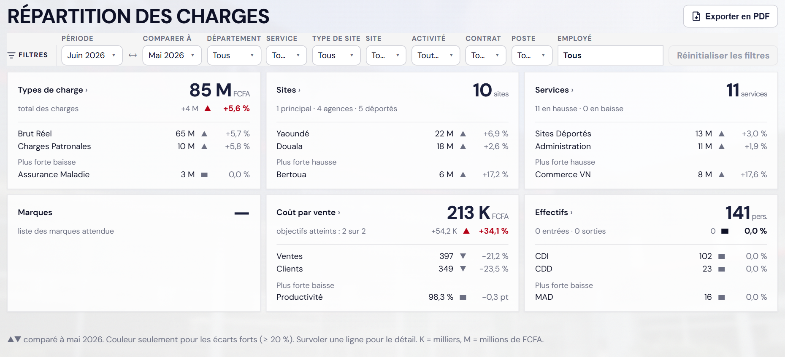
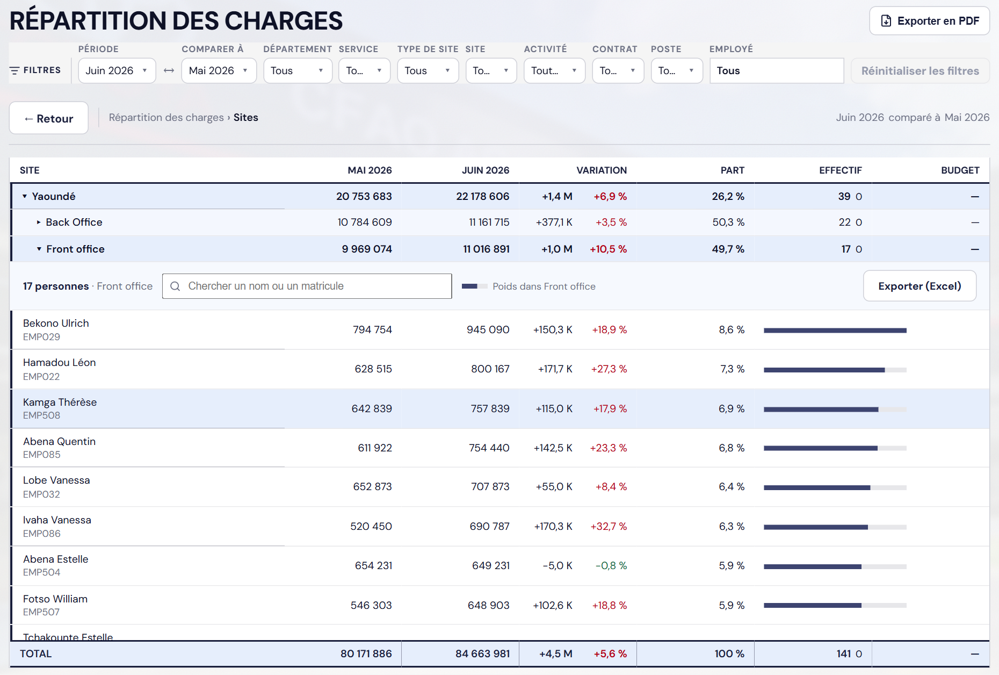

Les pages Mensuel et Annuel sont réunies en une seule page. On voit d'abord l'essentiel en six cartes ; un clic ouvre le détail, puis la liste des personnes concernées.
Fait
Mensuel et Annuel fusionnés en une page unique.R10
Premier aperçu en 6 cartes : Types de charge, Sites, Services, Marques, Coût par vente, Effectifs. Chaque carte donne le total, la variation et les éléments qui comptent le plus.R11
Clic sur une carte : tableau détaillé (période comparée, période, variation, part, effectif, budget), dépliable par activité front / back office et par contrat.R12
Clic sur une ligne : liste des personnes concernées, avec recherche, pagination et export Excel. Chaque consultation est enregistrée.R13
Tous les filtres de la barre s'appliquent (période, comparaison, département, service, site, activité, contrat, poste, employé).
Export PDF des cartes.
Décidé
Comparaison par défaut : un mois → le mois précédent ; une plage → la même plage l'année d'avant. Les primes se comparent au même mois N-1. Un « Comparer à » choisi passe avant.
Couleur seulement pour les écarts forts (≥ 20 %).
Budget affiché seulement là où il est saisi ; pas de budget au niveau poste, contrat ou employé.
Objectifs d'activité masqués dès qu'un filtre Service ou Site est actif.
Absentéisme = absences ÷ (effectif fin de mois × 22 jours × nombre de mois).
La liste des personnes est visible par chacun dans son périmètre.
Reste à faire
Marques : carte en place, en attente de votre liste des marques.
À confirmer de votre côté : accès à la liste nominative pour tous ; Winpart, Motul et Autofast traités comme des services ; regroupement DOP Equipment + Winpart.
Mise en ligne sur le site de démonstration après votre validation.
Plus tard : regroupement par département et graphiques combinés.
Premier aperçu : six cartes
Répartition des charges

Une carte par groupe. Total de la période, écart avec la période comparée, puis les éléments les plus importants et la plus forte hausse ou baisse.
Survol d'une ligne : montants exacts et détail.
Clic sur le titre d'une carte : ouvre le tableau détaillé de ce groupe.
Coût par vente : charges ÷ ventes, avec les objectifs atteints.
Marques : en attente de votre liste.
Détail et liste des personnes
Répartition des charges › Sites

Tableau par axe : site, service, type de charge, contrat… avec la même colonne de comparaison que les autres rapports.
Arbre : site › front / back office › contrat. Les lignes ouvertes restent visibles en haut pendant le défilement.
Personnes : clic sur une ligne. Recherche par nom ou matricule, part de chacun, export Excel.
Retour ou fil d'Ariane pour revenir aux cartes ; les filtres sont conservés.